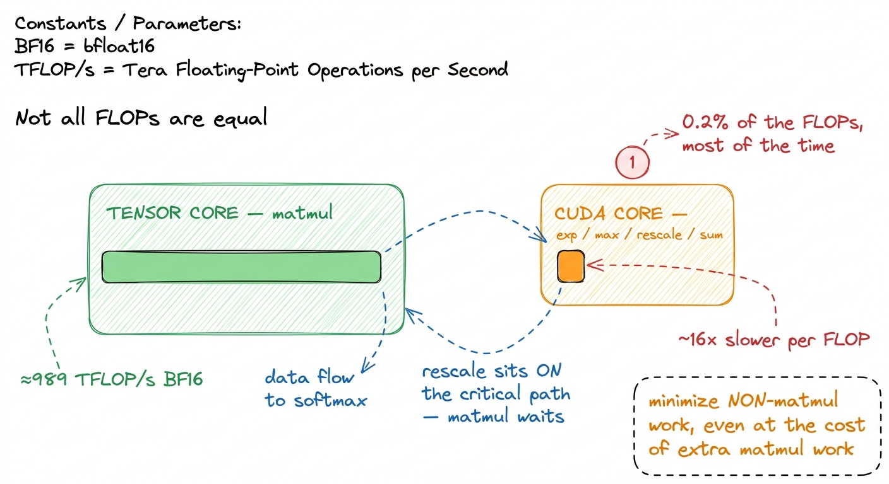
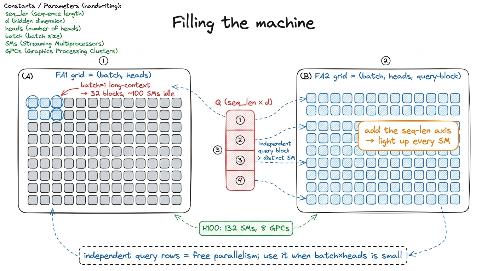
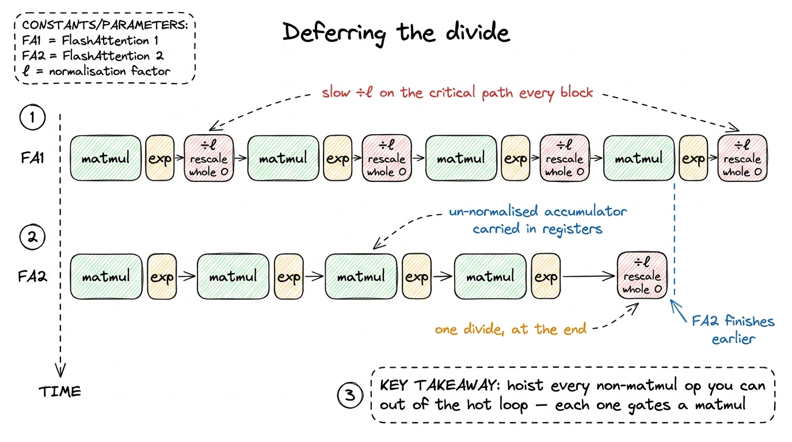
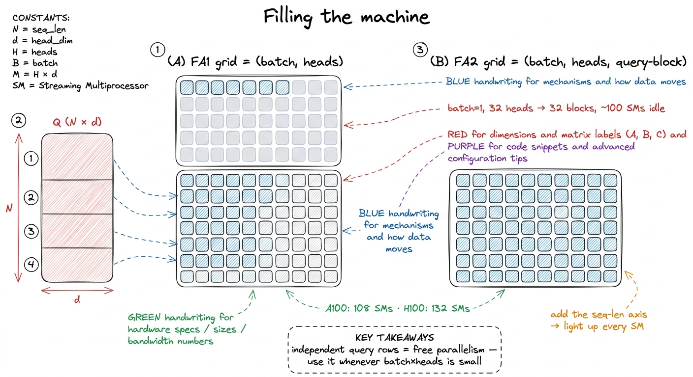

FlashAttention II: better work partitioning FA2
The first FlashAttention already won the argument that matters: attention does not need to materialize the N × N score matrix in HBM. By tiling the query, key, and value blocks and streaming the softmax online, it turned a memory-bound O(N²) monster into an O(N)-memory kernel that keeps everything in SRAM and registers. So when I first read the FlashAttention-2 paper my honest reaction was: what is left to win? The IO problem is solved. The answer turned out to be a lesson I keep relearning — being IO-optimal is not the same as being fast — and closing that second gap is worth roughly 2× over FA1 on an H100, taking the forward pass from something like 35% of theoretical peak to the neighborhood of 70%.1 The FA2 paper (Dao, 2023) reports ~2× over FA1 and up to ~72% of theoretical max FLOP/s on A100. On H100 the WGMMA/TMA path in later kernels pushes higher still, but the structural wins we discuss here — non-matmul reduction, seq-len parallelism, warp partitioning — are the H100-relevant ones and land before you ever touch wgmma.
This article is about that second gap. FA1 fixed where the bytes live. FA2 fixed how the work is partitioned — across instructions, across the sequence dimension, and across warps inside a block. Three changes, each one a direct answer to a profiler complaint.
Why an IO-optimal kernel can still be slow
The trap is that FLOPs are not fungible. From the three regimes we know an H100's tensor cores do about 989 TFLOP/s of BF16 matmul. But the same silicon runs elementwise and reduction math — the exp, the max, the rescale, the sum — on the ordinary CUDA cores at a small fraction of that rate.2 Horace He's "Making Deep Learning Go Brrrr" has the sharpest version of this: in BERT, normalization and pointwise ops are ~0.2% of the FLOPs but hit 250–700× lower achieved throughput than the matmuls, because they run on the non-tensor path and are memory-bound. A "non-matmul FLOP" costs you far more wall-clock than a matmul FLOP. Call it roughly a 16× penalty per non-matmul FLOP relative to a tensor-core FLOP.
That penalty is the whole story. Attention's arithmetic is two matmuls (Q·Kᵀ and P·V) wrapped around a softmax. The matmuls are cheap per FLOP; the softmax is expensive per FLOP. So even a tiny amount of softmax work, sitting on the critical path, can dominate the runtime — the tensor cores finish their matmul and then stall waiting for the CUDA cores to grind through an exp and a rescale before the next matmul can start.

figure rendering · Why FA1 leaves speed on the table: the softmax ops are a rounding erroThe FA1 inner loop paid this tax generously. To keep the running softmax numerically stable, every time it processed a new key/value block it rescaled the entire output accumulator by the ratio of the old and new running maxima — a full exp of a correction term plus a multiply of the whole accumulator, on every single iteration of the inner loop. Correct, elegant, and drowning in non-matmul FLOPs.
Change 1: do the non-matmul work less often
The first FA2 move is almost embarrassingly simple once you see it, and it is the one I'd want a candidate to derive on a whiteboard. The online-softmax rescaling is there to keep the accumulator on the correct scale as you go. But you don't actually need it on the correct scale until the very end. So: keep an unscaled accumulator through the whole inner loop, track the running max m and running sum ℓ as before, but defer the division by ℓ. Do it once, at the end, when you write the block out.
Concretely, the running-max correction still has to happen each iteration — that's required for numerical stability, you cannot let exp overflow — but the expensive normalize-the-whole-output step collapses from once-per-inner-block to once-per-output-block.
# FA1 inner loop (conceptual): re-normalize the accumulator EVERY block
for j in key_blocks:
S = Q @ K[j].T # tensor cores
m_new = max(m, rowmax(S))
P = exp(S - m_new) # non-matmul
correction = exp(m - m_new) # non-matmul
l_new = correction * l + rowsum(P) # non-matmul
O = (correction * (l / l_new)) * O + (1 / l_new) * (P @ V[j]) # <-- /l EVERY j
l, m = l_new, m_new
# FA2: keep O un-normalized; only the max-correction stays in the loop; divide ONCE
for j in key_blocks:
S = Q @ K[j].T
m_new = max(m, rowmax(S))
P = exp(S - m_new)
correction = exp(m - m_new)
l = correction * l + rowsum(P) # track the sum, but don't divide by it yet
O = correction * O + P @ V[j] # only the max-rescale, no /l here
m = m_new
O = O / l # the ONLY normalization, once per output blockThe diff looks tiny — the / l moves out of the loop — but the paper also reworks the algebra so the accumulator carries fewer rescales overall, and it recomputes the log-sum-exp for the backward pass rather than storing it. The point is the pattern: every non-matmul operation you can hoist out of the hot loop is worth more than its FLOP count suggests, because each one is a 16×-priced instruction blocking a 1×-priced matmul behind it.3 There's a subtle correctness caveat: you must still keep the max subtraction inside the loop. Deferring m too would let exp(S) overflow for large scores. FA2 defers the sum-normalization, not the max-stabilization — a distinction that's easy to get wrong on a first implementation and shows up as NaNs only on adversarial inputs.
Change 2: parallelize over sequence length, not just batch and heads
FA1 mapped one thread block to one (batch, head) pair, and inside that block looped over query blocks serially. That is fine when batch × heads is large enough to fill all ~132 Streaming Multiprocessors (SMs) on the H100. But inference — especially long-context inference with batch = 1 — is exactly the case where it isn't. With one sequence and, say, 32 heads, you launch 32 blocks onto a 132-SM machine and leave three quarters of the GPU idle. You are now occupancy-bound, a failure mode the roofline doesn't even show you.
FA2's fix is to add a third grid dimension: the query-block index. Different blocks of queries are fully independent in attention — query i's output never depends on query k's — so you can hand each query block to its own thread block and run them all concurrently.

figure rendering · Change 2: promoting the query-block index to a grid dimension keeps evThere's a nice asymmetry here worth internalizing. The outer loop is now over query blocks, and it's parallel across blocks. The inner loop is over key/value blocks, and it's serial within a block — which is exactly what you want, because the online softmax state (m, ℓ, the accumulator O) lives in registers and shared memory and is cheap to carry across inner iterations, whereas making it parallel would force a cross-block reduction through HBM. FA1 had these loops arranged the other way around, which is also why the FA2 loop swap improves memory access patterns: queries stay resident, keys and values stream past.4 For decode with a single query token, even this isn't enough — one query "block" per head can't fill the GPU. That's the FlashDecoding / split-K regime, where you also partition the key dimension across blocks and do a small final reduction. Different kernel, same instinct: find an independent axis and spread it across SMs.
Change 3: split by K, not by N — warp partitioning without the syncs
The last change is the most in-the-weeds, and it's the one that most rewards actually understanding the memory hierarchy. Inside a thread block, the work is divided among warps (32 threads each). FA1 used a scheme the paper calls "split-K": all four warps in a block cooperate on the same matmul by each taking a slice of the K (contraction) dimension. That means after Q·Kᵀ every warp holds a partial result for the same output rows, and they must exchange and sum those partials through shared memory (SMEM) — a write, a __syncthreads(), a read — before the softmax can run. And because the softmax feeds the second matmul P·V, you eat that shared-memory round-trip on the critical path, twice per inner iteration.
FA2 flips it to "split-Q": each warp owns a distinct slice of the query rows and computes its slice of both matmuls end to end, by itself. Warp 0 handles query rows 0–15, warp 1 handles 16–31, and so on. Now Q·Kᵀ, the softmax, and P·V for a given set of rows all live inside one warp. Keys and values are shared (every warp reads the same K/V blocks from SMEM, which is fine — reads don't need synchronizing), but there is no partial-sum exchange, no __syncthreads() between the matmul and the softmax.

figure rendering · Change 3: giving each warp its own query rows removes the shared-memorThe payoff is fewer barriers and less shared-memory traffic, which on a kernel that's already close to the roofline is exactly the kind of thing that converts "IO-optimal" into "actually fast." It's the same move, one level down, as change 1: FA1 was spending time on coordination overhead (syncs) instead of work, and FA2 restructured the ownership so the coordination mostly disappears.5 There's a real cost: split-Q means each warp needs the full K/V block resident, so the SMEM footprint per warp is larger and you can fit slightly smaller tiles. On H100 with up to 228 KiB usable SMEM per SM this is a comfortable trade; on older cards with 100–164 KiB it occasionally bites and you tune block sizes down. The win still dominates.
Change 4 (nearly free): skip the masked half of causal attention
One more, and it falls out of the seq-len parallelism for free. In causal (decoder) attention, query i only attends to keys j ≤ i. That means the score matrix is lower-triangular — roughly half the Q·Kᵀ and P·V work is multiplying things that will be masked to zero. FA1's structure made it awkward to skip; FA2, now that query blocks and key blocks are explicit tile indices in the loop, can simply not launch the inner iterations where the entire key block sits strictly above the diagonal for this query block.
The bookkeeping has three cases per query block: key blocks fully below the diagonal (compute normally, no mask needed), the one diagonal block (compute and apply the elementwise mask), and blocks fully above (skip entirely). Only the diagonal block pays for masking; everything above it is never computed.

figure rendering · Change 4: with query and key blocks as explicit tile indices, the wholfor i in query_blocks: # parallel across SMs
for j in key_blocks:
if j * B_kv > (i + 1) * B_q: # block entirely above the diagonal
continue # skip: all-masked, do no work
S = Q[i] @ K[j].T
if on_diagonal(i, j):
S = apply_causal_mask(S) # only the diagonal block masks
# ... online softmax, accumulate ...For a long context this is close to a 2× reduction in the matmul work of causal attention on its own, stacking on top of the other three changes. It's the attention-specific analogue of the very first lesson on this site: the fastest FLOP is the one you never issue.
Where this leaves us
None of these four changes touched the IO argument that made FlashAttention famous. The kernel still never writes the score matrix to HBM; it still streams tiles through SRAM. What FA2 did was notice that once you're IO-optimal, the profiler stops pointing at HBM and starts pointing at everything else: non-matmul instructions on the slow path (change 1), idle SMs (change 2), needless barriers (change 3), and computed-then-thrown-away work (change 4). Each fix is a regime diagnosis followed by the narrow move that regime allows — the exact loop we run on every kernel in this course.
The measured result is the roughly 2× over FA1 we opened with, landing the forward pass in the neighborhood of 70% of theoretical peak on the hardware of its era. To push past that on an H100 you stop restructuring the algorithm and start reaching for the machine: wgmma asynchronous tensor-core instructions, TMA (Tensor Memory Accelerator) bulk copies, and thread-block clusters over DSMEM — the Hopper-specific hardware we take up next, in the article on warp-specialized, producer-consumer attention kernels.